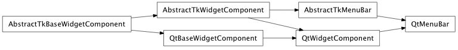
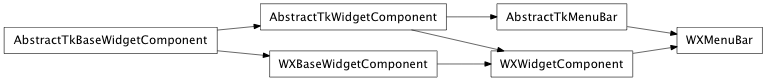

Enter search terms or a module, class or function name.
Bases: enaml.components.layout_task_handler.LayoutTaskHandler, enaml.components.widget_component.WidgetComponent
A declarative Enaml Component which represents a menu bar in a main window.
A read-only cached property which holds the list of children which are instances of Menu.
Overridden parent class trait
alias of __NoInterface__

Bases: enaml.backends.qt.qt_widget_component.QtWidgetComponent, enaml.components.menu_bar.AbstractTkMenuBar
A Qt4 implementation of a MenuBar.

Bases: enaml.backends.wx.wx_widget_component.WXWidgetComponent, enaml.components.menu_bar.AbstractTkMenuBar
A Wx implementation of a MenuBar.